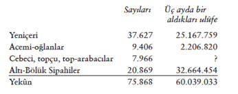
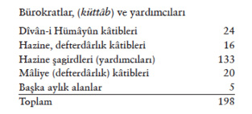

Timar Rejiminde Yolsuzluklar
Avusturya ile Uzun Savaş başlamadan önce timarlı sipahiler Osmanlı ordusunun savaş gücü büyük en kalabalık ordu birimini oluşturmaktaydı. Bu asker 1590’larda askerî bakımdan eski önemini kaybetti.
I. Ahmed döneminde Defter-i Hakanî emîni Ayni Ali Efendi, devletin arazi ve timar defterlerinin başında değişiklikleri yakından izleyebilen bir bürokrattı, onun gözlemleri durumu aydınlatmaktadır.
Ayni Ali, ıslahatçı veziriâzam Kuyucu Murad Paşa’nın isteği üzerine eyâletlerde timar idaresindeki durumu ve ortaya çıkan düzensizlikleri bildiren bir risâlenin, Kavânîn-i Âl-i Osman der Hulâsa-i Mezâmin-i Defter-i Dîvân’ın yazarıdır. Risâle, Defter-i Hakanî’de mevcut özgün malzemeye göre meydana getirilmiştir. Kendi ifadesiyle, risâleyi “zeâmet ve timar hususunda olan ihtilâl [kötü değişiklik] kaldırılmak istenirse, bu ne yolla yapılabilir, onu anlatmak ve ıslahat yollarını bildirmek” için kaleme almıştır.
Murad Paşa, devleti kalkındırmak için en sert önlemleri almaktan çekinmeyen bir ıslahatçı idi. Kâtib Çelebi’nin ifadesiyle “sâhibü’l-seyf” (asıp kesen bir diktatör) bir devlet adamıydı. Ayni Ali risâlesinde timar defterlerine göre her eyâlette olması gereken timarlar tespit olunduğu gibi, esas kanûnlar açıklanmıştır. Buna göre o zaman beylerbeyi geliri 80.000 akça üzerindeki beylerbeyilikler şunlardır:
Rumeli, Anadolu, Temeşvar, Ege Adaları (Cezâyir-i Bahr-i Sefîd), Diyarbekir, Erzurum, Şam, Trablusşam, Haleb, Van, Şehrizor. Bu beylerbeyilikler; Anadolu, Suriye, Balkanlar ve Macaristan’ı içine almakta olup ülkenin çekirdek eyâletlerini temsil eder. Irak’ta on bir sancakta timar ve zeâmet yoktur; Anadolu’da yaya ve müsellem beylikleri kaldırılmış, buralardaki askerler reâya sayılmıştır. Bunlar seferlerde 6900 eşkinci (seferli) göndermekteydi. Yaya çiftlikleri, timar ve zeâmete yazılmıştır. Ayni Ali şu önemli kanûnu hatırlatır: Geçmişten gelen kanûnlara göre, timar ve zeâmet gelirleri, yalnız ve yalnız fiilen sefer hizmetinde bulunanlara aittir (Halbuki zeâmet ve hâsların önemli bir kısmı Harem’in ve bazı yüksek ulemânın ve paşaların geliri olarak paşmaklık ve arpalık haline gelmiş bulunmakta idi).
XVII. yüzyılda, klasik dönem kanûnlarına göre ıslahata girişip idamlardan çekinmeyen “sâhibü’l-seyf” tipinde radikal ıslahatçılar, Kuyucu Murad Paşa ve Köprülü Mehmed Paşa’dır. II. Osman, ıslahatı plânlamış, fakat bu uğurda hayatını kaybetmiştir. Timar kanûnuna göre, sipahi timarı nerede ise, orada oturur ve seferde alaybeyi kumandasında beylerbeyinin eyâlet ordusuna katılır. Ayni Ali, şu temel kuralı da belirtir: Atası timar sahibi olmayana timar verilmezdi, fakat şimdi âyân ve eşrâfın, hatta aşağı mertebede kimselerin hizmetkârları timar almaktadır. Eski kanûnlar unutulmuştur. Timara hak kazanmak için ilkin, serhadlerde hizmet etmiş olmak koşulu aranırdı. “Şimdiki halde, reâyadan bir kimse bir paşanın kapısında hizmete girer ve timar alır.” Ayni Ali ilâve eder: “Zamanımızda timara istihkaka kim bakar ve evâmire kim itibar eder?” (s. 74).Timar idaresinde ıslahata gelince, yolsuzluğun iki nedeni vardır: Birincisi zaîm ve timarlıların yerlerinde hizmete hazır olmayıp şunun bunun hizmetinde olmasıdır. Eğer timarlı sipahi, pâdişah hizmetinde olsa seferlerde ordu tam olurdu. Şimdi seferlerde yoklama gereklidir. Ayni Ali’ye göre, şimdi seferlerde on timara bir adam görünmez. Ama mahsûl zamanında bir timara on adam sahip çıkar; yoklamanın timar berâtına göre yapılması gerekir. Yoklama defterleri defterhâne arşivinde saklanır. “Lakin otuz yirmi yıldan berü vaki’ olan seferlerin asla yoklamaları yoktur.”
Ayni Ali, defter-i hakânî emîni unvanıyla işe başladığında işlerin tam bir karışıklık içinde olduğunu anlatır. Bu kargaşa yüzünden aynı timar birkaç kişi üzerinde görünmektedir. Ayni Ali, saray mensupları ve iktidar sahiplerini karşısına almaktan kaçınmak için, zeâmet ve hâs gelirlerinin büyüklerce nasıl yağma edildiğini açıkça anlatmaz. Fakat lâyihacı bürokratlar, Kitâb-i Müstetâb yazarı ve Koçi Bey bu önemli konu üzerinde dururlar.
Ulûfeli Kullar
Ayni Ali pâdişaha (aslında Veziriâzam Kuyucu Murad Paşa’ya) sunduğu risâlenin ikinci kısmında, maaş (ulûfe) alan saray ve küttâbın, aldıkları maaş ve gündeliklerin listesini verir, Bu liste, pâyitahtta 1610 tarihlerinde maaş alan asker gruplarını gösterir.

İstanbul’da merkezde maaş alan kara kuvvetleri, toplam 75.868 nefer, üç ayda aldıkları ulûfe maaş 60.039.033 akçadır (yaklaşık 500.000 altın).
Donanma mevâcibleri, donanma reîsleri ve gemi tayfası azebler ve öteki donanma halkı 2364 kişidir.178 Yekûn olarak saray hizmetlileri, pâdişaha yakın rikâb ağalarıyla ordu ve saraydaki kullar mevcudu 91.203 kişidir.

Harem-i Hümâyûn ağaları ve iç-oğlanları 709 kişi.
178 Ayni Ali risâlesinin iki yayınında, Tasvir-i Efkâr (H. 1280) ve T. Gökbilgin’in önsözüyle tekrar yayını (İstanbul, 1979), sahifeler karışmıştır. Arşiv defterleriyle kontrol edilerek yeni bilimsel bir yayını yapılmalıdır. Donanma ile ilgili kısımda ayrıntılar atlanmıştır.